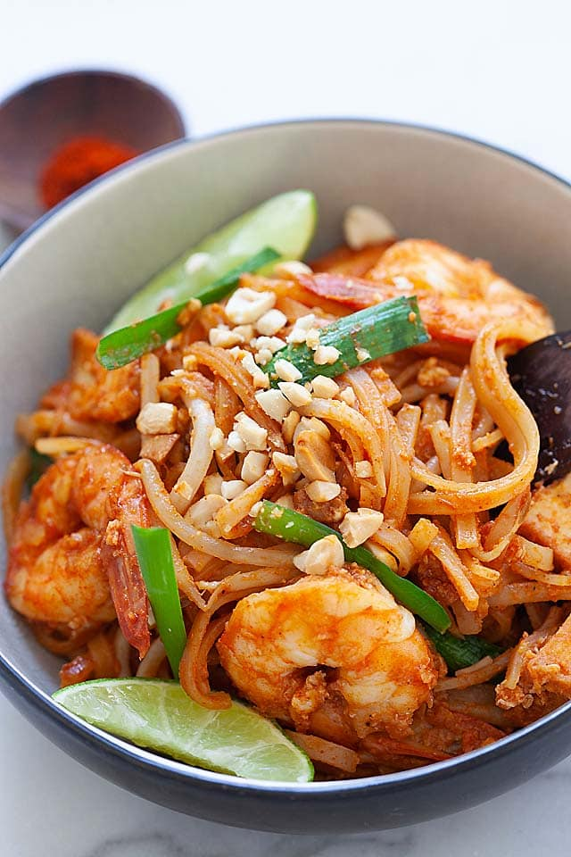

Pad Thai
Preparation Time: 15mins
Cook Time: 5mins

Ingredients
- 4 oz. flat rice noodles
- 2 tablespoons oil
- 1 clove garlic finely minced
- 4 oz. medium-sized shrimp shelled and deveined
- 2 oz. fried firm tofu, cut into slices
- 1 large egg
- 4-6 oz. bean sprouts
- 1 oz. chinese chives or scallions cut into 2-inch lengths
- 2 tablespoons crushed peanuts
- lime wedges
Pad Thai Sauce
- 1 1/2 tablespoons fish sauce
- 1 1/2 tablespoons sugar
- 2 tablespoons water
- 1 tablespoon rice vinegar
- 1/2 teaspoon chili powder or more to taste
Instructions
-
Follow the package instructions to boil the dry rice noodles. The rice
noodles should be soft (but still chewy and not mushy) after boiling.
Rinse the boiled noodles with cold running water.
-
Mix all the ingredients in the Pad Thai Sauce in a small bowl until well
combined and the sugar completely dissolved, set aside.
-
Heat up a skillet on high heat and add the oil. As soon as the oil is
heated, add the garlic into the skillet and start stirring until you
smell the aroma of the garlic. Add the shrimp and the tofu pieces into
the skillet and continue stirring.
-
As soon as the shrimp changes color, add the noodles into the skillet
and stir continuously, about 30 seconds. Use the spatula to push the
noodles to one side of the skillet, and crack the egg on the empty side
of the skillet.
-
Use the spatula to break the egg yolk and blend with the egg white, let
cook for about 30 seconds. Combine the egg and the noodles, and add the
Seasoning sauce. Stir to combine well with the noodles.
-
Next, add the bean sprouts and chives and continue stirring. As soon as
the bean sprouts are cooked, stir-in the crushed peanut. Turn off the
heat and serve the Pad Thai immediately with the lime wedges.